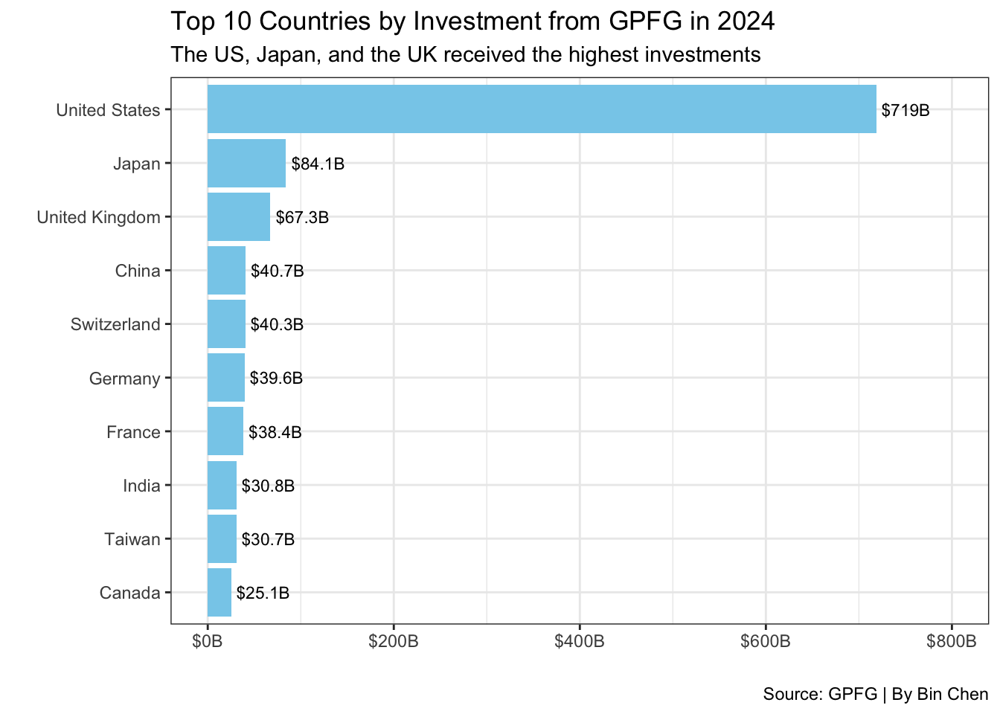
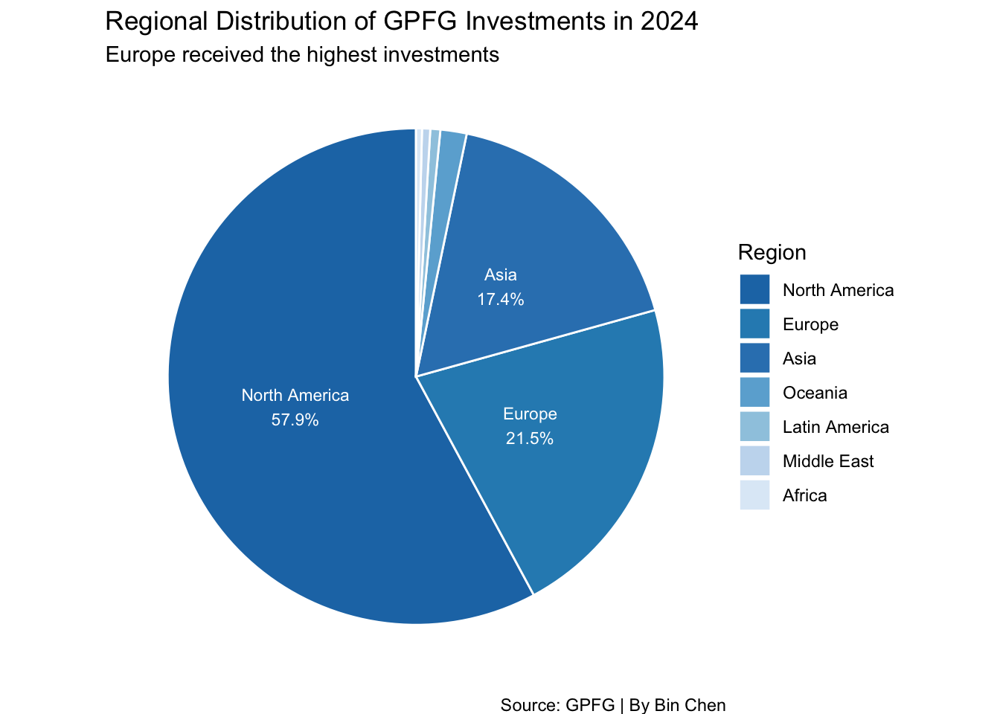
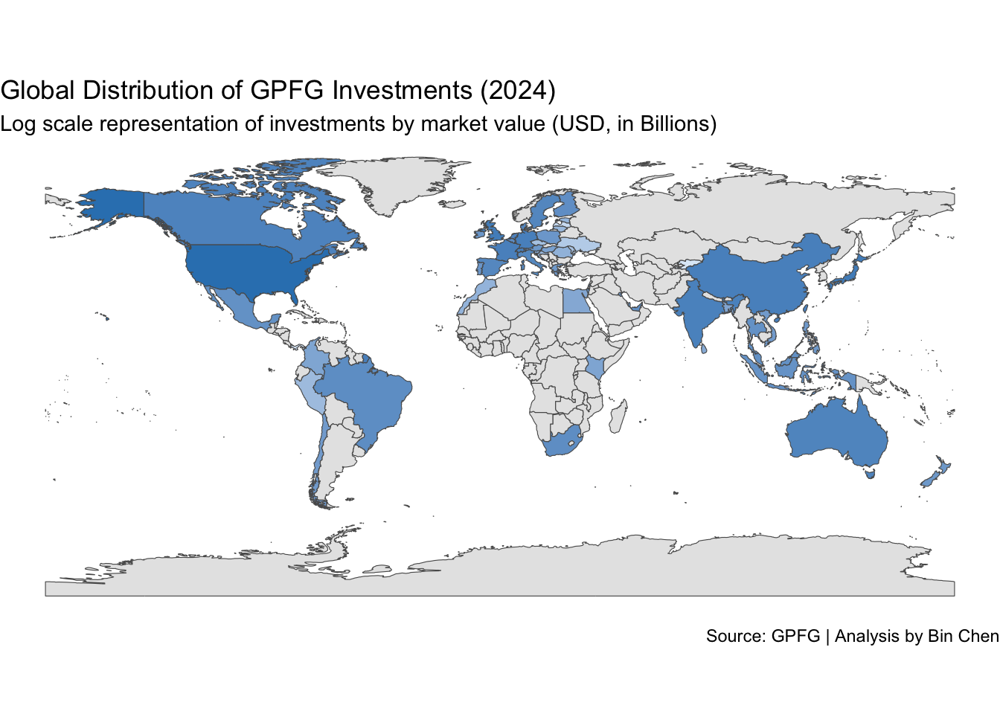

library(tidyverse)
library(readxl)11 GPFG Investments
Investments by Country in 2024
11.1 Overview
In this notebook, we will analyze the Norwegian Government Pension Fund Global (GPFG), the world’s largest sovereign wealth fund, to understand where it invests. The fund is managed by Norges Bank Investment Management (NBIM), a division of the Norwegian Central Bank.
About the Data
We will use investment data from the NBIM website, which details the fund’s holdings across different asset classes, sectors, and countries for the year 2024. The original dataset, downloaded from NBIM, is in Excel format (EQ_2024_Country.xlsx). For convenience, it has been renamed to gpfg-2024.xlsx and stored in the data folder.
Objectives
In this analysis, we aim to answer the following questions: - 1. Which countries received the most investment from GPFG in 2024? - 2. Which regions had the highest investment from GPFG in 2024? - 3. What are the top 10 companies in China that GPFG invested in during 2024?
To visualize the findings, we will create:
- A bar plot of the top 10 countries that received the most investment.
- A pie chart showing the regional distribution of GPFG’s investments.
- A world map illustrating investment distribution across countries.
11.2 Data Import and Wrangling
Let’s start by importing the necessary libraries and loading the data.
# Load the data
df <- read_excel("data/gpfg-2024.xlsx")glimpse(df)Rows: 8,659
Columns: 9
$ Region <chr> "Oceania", "Oceania", "Oceania", "Oceania", "O…
$ Country <chr> "Australia", "Australia", "Australia", "Austra…
$ Name <chr> "Abacus Group", "Abacus Storage King", "Accent…
$ Industry <chr> "Real Estate", "Real Estate", "Consumer Discre…
$ `Market Value(NOK)` <dbl> 45639589, 48005740, 63775786, 70590539, 818396…
$ `Market Value(USD)` <dbl> 4018507, 4226843, 5615376, 6215406, 720588, 88…
$ Voting <dbl> 0.66, 0.46, 0.68, 3.00, 0.38, 3.00, 1.19, 1.68…
$ Ownership <dbl> 0.66, 0.46, 0.68, 3.00, 0.38, 3.00, 1.19, 1.68…
$ `Incorporation Country` <chr> "Australia", "Australia", "Australia", "Austra…The dataset looks pretty clean, the only issue is the column names Market Value(USD) is a bit long, so we will rename it to market_usd for easier access.
11.3 Data Cleaning
Let’s rename the columns that we will use to lowercase for easier access.
# Rename the column
df_clean <- df |>
rename(
region = `Region`,
country = `Country`,
name = `Name`,
industry = `Industry`,
market_value_usd = `Market Value(USD)`) |>
select(region, country, name, industry, market_value_usd)
glimpse(df_clean)Rows: 8,659
Columns: 5
$ region <chr> "Oceania", "Oceania", "Oceania", "Oceania", "Oceania"…
$ country <chr> "Australia", "Australia", "Australia", "Australia", "…
$ name <chr> "Abacus Group", "Abacus Storage King", "Accent Group …
$ industry <chr> "Real Estate", "Real Estate", "Consumer Discretionary…
$ market_value_usd <dbl> 4018507, 4226843, 5615376, 6215406, 720588, 8879029, …11.4 Data Analysis
Which countries received the most investment from GPFG in 2024?
# Sum of market value by country
top_country <- df_clean |>
group_by(country) |>
summarise(total_investment = sum(market_value_usd)) |>
top_n(10, total_investment)
top_country# Create a bar plot of the top 10 countries by investment
top_country |>
1 ggplot(aes(x = reorder(country, total_investment), y = total_investment / 1e9)) +
2 geom_col(fill = "skyblue") +
geom_text(aes(label = paste0("$", round(total_investment / 1e9, 1), "B")),
3 hjust = -0.1, size = 3) +
4 coord_flip() +
5 scale_y_continuous(limits = c(0, 800), labels = scales::label_dollar(suffix = "B")) +
labs(
title = "Top 10 Countries by Investment from GPFG in 2024",
subtitle = "The US, Japan, and the UK received the highest investments",
x = " ",
y = " ",
caption = "Source: GPFG | By Bin Chen"
6 ) +
7 theme_bw()- 1
- Set the x-axis as the country and the y-axis as the total investment in billions.
- 2
- Create a bar plot with a sky-blue color.
- 3
- Add the investment amount as text on the bars.
- 4
- Flip the coordinates to make it horizontal.
- 5
- Set the y-axis limits and format the labels as dollars in billions.
- 6
- Add the title, subtitle, and caption.
- 7
- Apply a bw theme to the plot.

Which regions had the highest investment from GPFG in 2024?
# Sum of market value by region
top_region <- df_clean |>
group_by(region) |>
summarise(total_investment = sum(market_value_usd)) |>
arrange(desc(total_investment))
top_region# Create a pie chart of the regional distribution of investments
blue_palette <- c("#1f77b4", "#2b8cbe", "#3182bd", "#6baed6", "#9ecae1", "#c6dbef", "#deebf7")
top_region |>
1 mutate(p = total_investment / sum(total_investment)) |>
2 ggplot(aes(x = "", y = total_investment, fill = reorder(region, -p))) +
3 geom_bar(stat = "identity", width = 1, color = "white") +
4 coord_polar("y", start = 0) +
5 scale_fill_manual(values = blue_palette) +
geom_text(aes(label = ifelse(p >= 0.05,
paste0(region, "\n", round(p * 100, 1), "%"), "")),
6 position = position_stack(vjust = 0.5), color = "white", size = 3) +
labs(
title = "Regional Distribution of GPFG Investments in 2024",
subtitle = "Europe received the highest investments",
fill = "Region",
caption = "Source: GPFG | By Bin Chen"
7 ) +
8 theme_void()- 1
- Calculate the proportion of investment by region.
- 2
- Set the x-axis as an empty string and the y-axis as the total investment.
- 3
- Create a bar plot with the identity statistic and white borders.
- 4
- Use polar coordinates for the pie chart.
- 5
- Set the fill colors using a blue palette.
- 6
- Add text labels for regions with a proportion greater than 5%.
- 7
- Add the title, subtitle, and caption.
- 8
- Apply a void theme to remove the background.

Pie Chart with ggplot2
Pie charts are not recommended for data visualization due to the difficulty in comparing the size of the slices. However, they can be used effectively for showing proportions in a circular format. To create a pie chart in ggplot2, we use coord_polar("y", start = 0) to convert the bar plot into a pie chart.
Top 10 Companies in China and Hong Kong SAR that GPFG Invested in 2024
# Filter companies in China and Hong Kong SAR
top_hk <- df_clean |>
filter(country == "Hong Kong") |>
top_n(10, market_value_usd) |>
select(name, market_value_usd) |>
arrange(desc(market_value_usd))
top_hk# Make two bar charts by facet_wrap
top_china <- df_clean |>
filter(country == "China") |>
top_n(10, market_value_usd) |>
select(name, market_value_usd) |>
arrange(desc(market_value_usd))
top_china11.5 Map: Investment Distribution Across Countries
Load the World Map Data
library(rnaturalearth) # For world map data
world_map <- ne_countries(scale = "medium", returnclass = "sf") Merge the World Map Data with Investment Data
# Sum of market value by country
world_invest <- df_clean |>
group_by(country) |>
summarise(total_investment = sum(market_value_usd)) |>
filter(total_investment > 0)When looking at the country format in both datasets, we see that the country column in the investment data is in full name format, which corresponds to the name_long column in the world map data. We will use this column to merge the two datasets.
# Merge the world map data with investment data
world_merge <- left_join(world_map, world_invest, by = c("name_long" = "country")) %>%
mutate(total_investment = replace_na(total_investment, 0)) %>%
select(name_long, total_investment, geometry)
summary(world_merge) name_long total_investment geometry
Length:242 Min. :0.000e+00 MULTIPOLYGON :242
Class :character 1st Qu.:0.000e+00 epsg:4326 : 0
Mode :character Median :0.000e+00 +proj=long...: 0
Mean :5.246e+09
3rd Qu.:0.000e+00
Max. :7.190e+11
Which data to be left?
Here we use left_join to merge the world map data with the investment data based on the country names. The reason we let world_map be the left table is that we want to keep all countries in the world map data, even if they don’t have investment data. Otherwise, we would lose some countries in the map.
# Create a world map of investment distribution
world_merge |>
1 mutate(total_investment_B = total_investment / 1e9) |>
2 ggplot(aes()) +
3 geom_sf(aes(geometry = geometry, fill = total_investment_B)) +
scale_fill_gradient(
low = "#deebf7",
high = "#3182bd",
na.value = "grey90",
name = " ",
trans = "log",
4 ) +
labs(
title = "Global Distribution of GPFG Investments (2024)",
subtitle = "Log scale representation of investments by market value (USD, in Billions)",
caption = "Source: GPFG | Analysis by Bin Chen"
5 ) +
6 theme_void() +
7 theme(legend.position = "none")- 1
- Convert the total investment to billions for better visualization.
- 2
- Set the aesthetics for the plot.
- 3
- Create a spatial feature plot using the world map geometry and fill color based on total investment.
- 4
- Set the gradient fill colors from light blue to dark blue with a log scale.
- 5
- Add the title, subtitle, and caption.
- 6
- Apply a void theme to remove the background.
- 7
- Remove the legend for a cleaner look.
